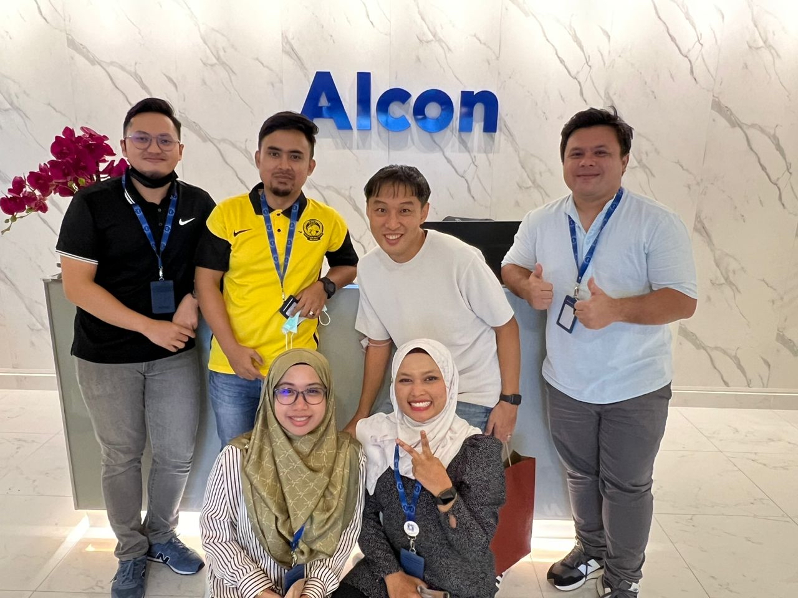

FP&A & performance
Budgets, forecasts, variance narratives, and management reporting design.
前田 鉱太 · Kota Maeda — Finance Controller and USCPA, from Shizuoka, Japan. About two decades in multinational finance & accounting, focused on FP&A, stakeholder partnering, and technology-led simplification including AI and programming.
Grounded in Shizuoka Prefecture (Gotemba City), now based in Tokyo’s Bunkyo ward with family — aligned with your self-introduction deck from July 2025.
I am a Finance Controller with roughly fifteen to twenty years of experience in finance and accounting, primarily in a multinational pharmaceutical setting — bridging reporting discipline with practical business support.
出身地は静岡県御殿場市。現在は東京都文京区在住で、妻と9歳の娘がいます。医療系外資系企業で約20年近く財務経理に携わってきました。
I prefer the same outcome achieved with energy and collaboration rather than unnecessary struggle. I am generally calm and forward-looking; if something lands flat, I appreciate direct feedback.
どうせ同じ成果を出すなら、苦しんで取り組むよりも楽しんで取り組みたいと考え、協力しながら目標を達成するのが好きです。穏やかで前向きに過ごしますが、話が面白くない場面もあるかもしれません。その際は遠慮なくご指摘ください。
Deep experience across FP&A cycles, management reporting, and accounting foundations — credentialed as a USCPA and used to the governance expectations of regulated, global organizations.
Structured forecasting and analysis, month-end integrity, and clear narratives for leadership. I connect the detail in the ledger to the story the business needs to run better — without losing control or audit readiness.
リーダーシップやコミュニケーションを重視しつつ、財務・経理の専門性で組織の意思決定を支えることを大切にしています。
Business partnering is not a slide title — it is daily intent: accessible, reciprocal, and respectful of others’ time and channels.
I aim for a servant leadership style: supporting others’ strengths, staying close to teams and the company’s goals, and engaging proactively where I can help.
Servant Leadershipのスタイルです。皆さんの力になれるよう日々努力し、チームや会社が良くなるように、自分からできるだけ関わりを持とうとします。
Whether the conversation happens over email, phone, Teams, or in person, the principle is the same: two-way, comfortable communication — not one-way broadcasts.
メール、電話、Teamsなど、どのコミュニケーション手段でもコミュニケーションを大事にします。一方的ではなく、お互いに快適なコミュニケーションができるように努めます。
“I can lose track of time on topics I care about — if you see it, please nudge me.” / 「好きなところにたくさん時間を割いてしまう傾向があります。もしあれば遠慮なく注意してください。」
I specialize in technology-based simplification: fewer manual steps, clearer data flows, and pragmatic use of AI and code where they actually reduce risk and free people for judgment work.
From spreadsheet-heavy close processes to planning models and management packs, I look for repeatable patterns worth automating — always anchored in controls and explainability suitable for finance stakeholders.

Visuals below are exported from your July 2025 introduction deck — placeholders you can swap or extend as you add case studies and links.
Budgets, forecasts, variance narratives, and management reporting design.
Technical accounting judgment, policy, and control-minded execution.
Operating cadence with sales, R&D, supply chain, and regional leadership.
Leaner close, planning workflows, and clearer handoffs between functions.
Automation, assisted analysis, and lightweight tools built for finance users.